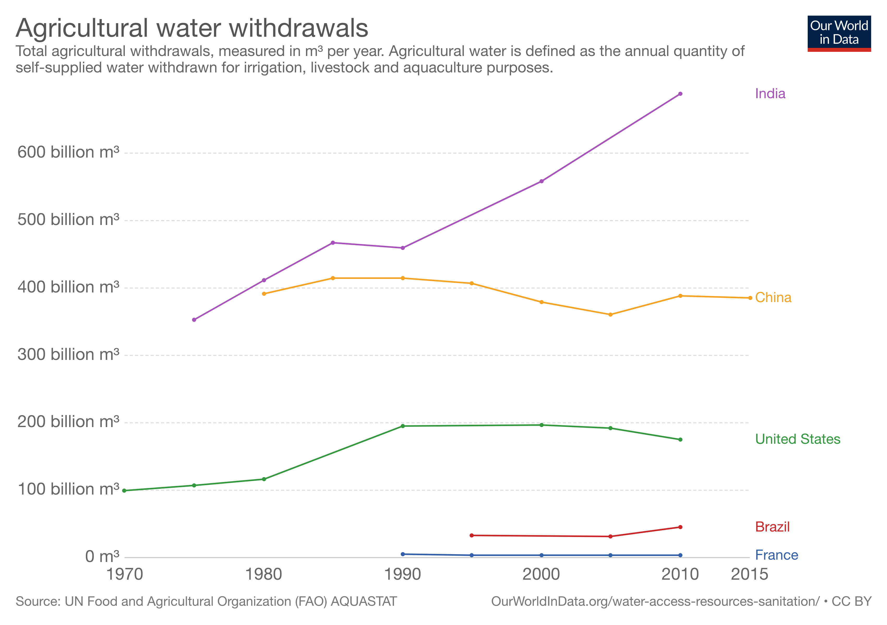

Hemp is like that elder brother who's always held responsible for the notoriety of the younger one (marijuana, in this case). The irony? By erroneously stigmatizing and tagging hemp with misleading labels such as 'dangerous' and 'intoxicating'—both legislatively and through societal preconceptions—we are actually shunning an extremely beneficial plant that could induce an entire paradigm shift in India's agrarian measures.
First things first, before we dive into hemp any further, let's clear this: hemp does not come with the high. It has a negligible amount of THC (the compound that is responsible for the 'high'), hence rendering it as a non-psychoactive plant. In India, the legality of hemp is in the grey area; though cultivation of industrial hemp is allowed at the federal level according to the NDPC act, it is up to the states to regulate it. However, many states haven't taken an active position in regulating hemp and often tend to include it in the same pool as marijuana. Uttarakhand is an exception to this, as it recently legalized hemp cultivation.
But Uttarakhand, a single state, isn't enough for India to tap into the global hemp market. As hemp is being proven to be extremely beneficial in a myriad of areas, India, as a collective, could greatly reap its benefits by introducing the necessary regulatory measures to encourage cultivation of the plant.
The central captivating factor of hemp is its versatility. It is commonly regarded as the only plant that can feed you, house you, clothe you, and heal you; and this statement isn't unfounded. Its seeds are perfectly edible, and are high in protein and omega-3 acids; hempcrete obtained from hemp hurds can be used as a building material; fiber obtained from the plant holds great potential in the clothing industry; and last but not the least, the latest buzz of the medical world, Cannibinidoil (CBD), a compound obtained from the hemp plant, is slowly being anecdotally and scientifically proven to have great therapeutic potential.
But again, the most important question here is: how can hemp solve India's problems?
A Solution to India’s Water Woes
NITI Aayog's 2018 report on water management stated found that India is currently facing its worst water crisis; around 21 cities are likely to run out of groundwater by 2020, and demand is predicted to double the amount of supply by 2030. Given that 80% of this water is being used in agriculture, and India being the largest consumer of agricultural water in the world, sustainable agricultural measures are the need of the hour.
Cultivation of hemp could be a step forward on that front since it relatively consumes lesser water than other crops (for instance, one third the amount of water that cotton consumes). It also requires lesser land area; hemp produces twice as much fiber per acre as cotton. Introducing hemp production on a large scale could help in reaping the same benefits at a minimal depletion of our natural resources.
Hemp consumes one third the amount of water that cotton consumes.
The Pressing Cotton Problem
Cotton has often come under meticulous scrutiny for its low profitability, the intense amount of care it needs, and for its alleged attribution to farmer suicides. A study published in the EPW magazine observed that rising input costs of the crop and break even returns has been a factor in causing farmer suicides. The study further elaborated that a BT cotton farmer is barely able to meet the cost of production, let alone generate a profit sufficient to sustain the household. With the problems of cotton slowly emerging and further contributing to the long-standing agrarian distress, alternatives need to be explored and adopted to aid the farmers of the country; hemp could very well be that alternative, given the fact that hemp has higher fabric yield than most other crops, requires relatively lesser care, and has high versatility in applications which could prevent volatile demand.
A study observed that the rising input costs of cotton and break even returns has been a factor in causing farmer suicides.
CBD: The Panacea For India’s Painkiller Crisis?
India is also facing a huge painkiller crisis, where it is estimated that only 2% of the population have access to painkillers. According to the Lancet Journal, there has been growing inequality in painkiller accessibility between rich and poor countries. Due to its addictive properties, restrictions have gone too far in countries like India, and people continue to face preventable pain.
There has been emerging evidence that CBD may hold the potential to solve this problem; studies indicate that CBD could be a non-addictive alternative to opioids and could even inhibit opioid craving. Given that India urgently needs a solution for its distressed patients, while at the same preventing scenarios like the opioid epidemic in the US, CBD could very well open the gates to non-addictive, safer pain alleviation.
CBD could very well open the gates to non-addictive, safer pain alleviation.
The global industrial hemp market is expected to be worth 10.6 billion dollars by 2025. The medical market for CBD is conservatively predicted to grow to a whopping 22.5 billion dollars according to the Brightfield Group. Clearly, the economic opportunities are plenty for India to tap into. With the introduction of the Hemp Farming Act which legalised the cultivation of hemp in the US, and other countries such as China and France already spearheading the global hemp market, it is high time that India heeds the international measures being taken and tend towards the cultivation of hemp on a large scale, because one of the solutions that may ease the agrarian and sustainability problems that the nation faces may very well be this versatile crop.